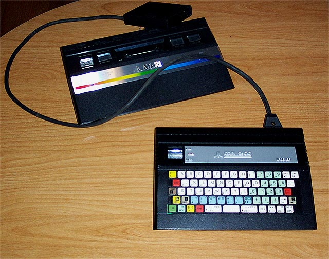
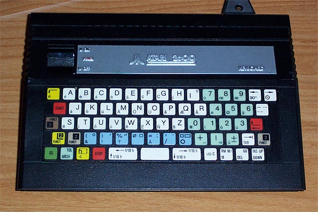

|
Atari
2600
Keyboard Add-on  This one is completely outta the blue.
It was thought that Atari's only venture
into a computer keyboard add-on was
"The Graduate" Computer that was
developed by PVI for Atari and was canceled in the fall of 1983 when James Morgan took over Atari. However this oddity turned up and it appears that Atari was toying around with the idea of either its own add-on computer system or perhaps this was a possible restyling of "The Graduate" into a 3/4 sized version of the Atari 2600jr case which was also being considered for the unreleased "Voice Commander" module for the Atari 2600 line. This unit is just a mockup, there are no internal electronics. Hopefully more will come to light on this rather eye opening find sometime in the future.  |